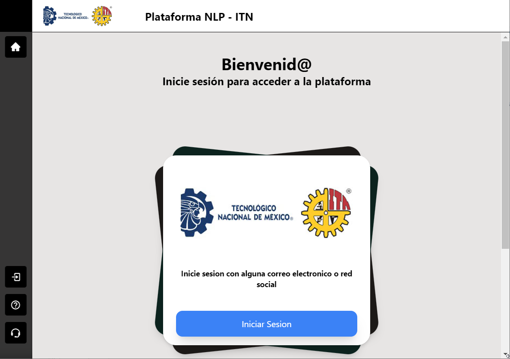

| Artifact: Deseño |
 |
|
| El propósito del artefacto de "Diseño" es proporcionar una guía clara y detallada para la implementación del sistema. Define cómo se construirán y conectarán las partes del software para cumplir con los requisitos funcionales y no funcionales establecidos en la arquitectura. |
| Roles | Responsible: | Modified By: |
|---|---|---|
| Tasks | Input To:
| Output From: |
| Main Description | El artefacto de "Diseño" incluye información específica sobre la estructura interna del sistema. Esto puede incluir: Componentes y MódulosIdentificación de los componentes y módulos que compondrán el sistema.
Interfaces

Diagramas de FlujoFlujo de Autenticación
Flujo de Procesamiento de Lenguaje Natural
Flujo de Gestión de Lógica de Aplicación y Base de Datos:
Diagrama de Actividad General del Sistema
|
|---|


| Templates |
|---|
| Impact of not having | Implementation will proceed with fine-grained, inconsistent tactical decisions that lead to poor-quality software. |
|---|---|
| Reasons for not needing | Some representation of the design will always be necessary. In circumstances where a project involves applying well-understood, existing strategies for architecture and design, it is possible that you will not need a new design. In those cases, you can simply refer to some existing design. |
| Representation Options | It is important that the author of this work product be able to analyze key decisions about the structure and behavior of the system and communicate them to other collaborators. It is also important that these decisions can be communicated at various levels of abstraction and granularity. Some aspects of the design can be represented by source code, possibly with some extra annotations. But more abstract representations of the design will be at a higher-level than source code. The more abstract representation could use various representation options. UML could be used either strictly or informally; it is a preferred notation based on its rich semantics and broad usage in the industry. Other techniques could be used to communicate the design. Or the design could use a mix of techniques as applicable. Whether you record these representations on a white board or use a formal tool is not governed by this process. But any representation, whether characterized as formal or informal, should unambiguously communicate the technical decisions embodied by the design. |
| Checklists | |
|---|---|
| Concepts |
This program and the accompanying materials are made available under the |